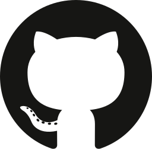

01 / Release status
Public install is being prepared.
There is no published AgentX release, public product repository, or npm installer yet. This is the deployment guide for the project now branded Rovara; it is not an installable public release.
Current source-checkout installation needs authorized repository
access, locally built release assets, and worker and Slack
container images that your team builds and pushes. No public
npx command is offered here.
A public source link, the exact release version, a complete install command, version-matched instructions, and a verified first-task path.
The current code uses FSL-1.1-ALv2, a source-available license. Each release converts to Apache 2.0 two years after it ships. An open-source-at-launch decision would require changing the actual repository license first.
02 / Prerequisites
Prepare the account and connections.
| Requirement | What your team needs |
|---|---|
| AWS |
A dedicated account, administrator access for first setup,
and capacity in us-east-1. The installer
checks worker capacity and two free Elastic IPs.
|
| Node.js |
22.19.0 or newer within the 22.x series,
below 23. If your CloudShell session runs Node 20, upgrade it before setup.
|
| GitHub | Permission to create a GitHub App and grant it access to the selected repositories. |
| Slack | Permission to create and install a Slack app. Your workspace administrator may need to approve it. |
| Model access | Amazon Bedrock is the default. Anthropic, OpenAI, or OpenRouter can also be configured; rates and availability depend on your provider. |
03 / Ownership
You operate the environment.
The installer deploys the environment through CloudFormation
stacks in your AWS account. Your team owns operation, upgrades,
credentials, costs, and cleanup. The technical CLI remains
agentx.

Your repositoriesRoutes requests, authorizes project access, and tracks task state.
Isolated task execution in the project’s prepared environment.
Retains task files when idle compute stops.
Use a dedicated account for the installation. The AWS account is the documented security boundary; environment names do not provide an account-level boundary.
For credentials, use the version-matched hidden prompts and setup guide. Never put tokens into a Slack task, commit them to a repository, or publish them in a demo.
04 / Costs
See the cost before you create.
The installer shows a resource plan and a monthly estimate before creating the environment. Your team pays AWS and model charges and can configure a monthly budget alert.
us-east-1; September 2026 price inputs; default
Bedrock models; 1,000 turns, 100 worker sessions, 60 worker
instance-hours, and 10 retained workspaces. Derived from the
installer’s pricing formula, not a quote. NAT data processing
and some usage-dependent charges are excluded.
Two NAT gateways and the always-on Slack service create a baseline cost. Worker hours, retained EBS storage, model use, and data transfer change the total. OpenRouter model cost is not included in the estimate because the estimator has no price on file.
A budget alert is a notification, not a spending cap. Stopping idle workers reduces compute use; it does not stop retained-storage or always-on-service charges.
05 / First task
A small change. A complete handoff.
-
Deploy the environment.
Review the resource and cost plan before confirming creation. Use the install guide that matches your exact source or release version.
-
Connect the project.
Install the GitHub and Slack apps, configure developer sign-in, and register the repositories and project checks.
-
Confirm the connection.
Verify a reply in the project Slack channel. For an MCP handoff, sign in as a developer with access to that project.
-
Give it a small task.
Use a test repository. Ask for a bounded bug fix, inspect the change and reported checks, then request a draft pull request for review.
-
Follow up, then close deliberately.
Continue the task once to confirm persistence. Use the version-matched operator guide to close the workspace and remove the test deployment when finished.
06 / Operate and remove
Know the exit before you install.
Before running a deployment, identify the environment, account, and region. Keep its operator guide and installation record available for upgrades and recovery.
Closing a task workspace and removing the AWS environment are different actions. Workspace storage, GitHub and Slack app installations, and external provider settings can need separate cleanup. Use the removal instructions for the installed version and confirm the resources and retained data before deleting anything.
There is no standalone teardown command on this page: the public
release and its operator guide must ship together. For a source
installation today, use docs/install.md,
docs/releases.md, and the environment operator
documentation in your authorized checkout.
8acb7ac00c97 · 05
October 2026. This identifies inspected implementation, not a
completed live install or a customer outcome.
Claim references.